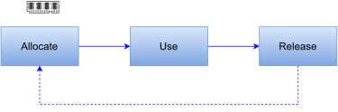
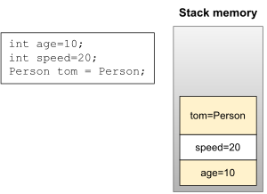
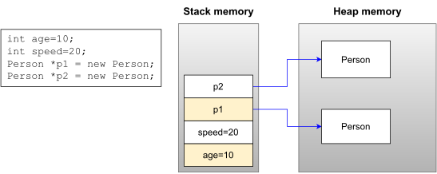
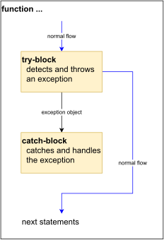
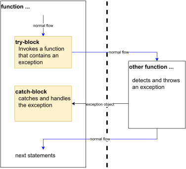
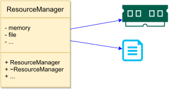
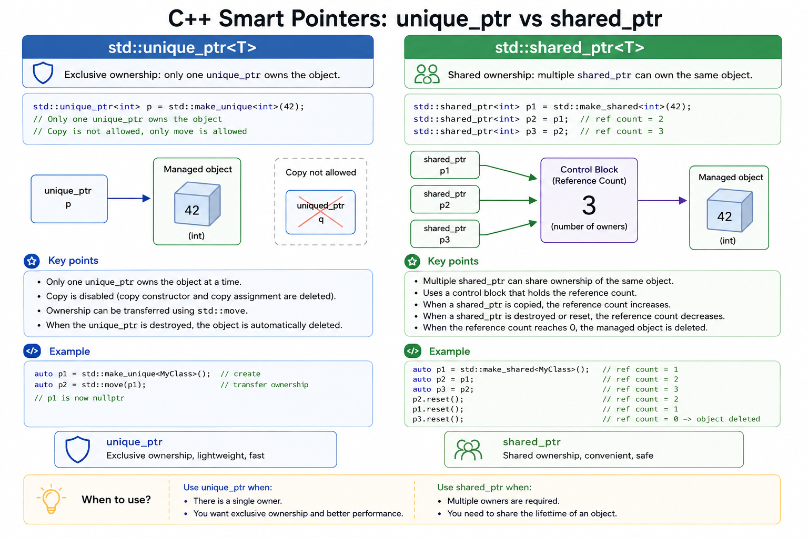

classDiagram class exception class runtime_error class bad_alloc class bad_cast class bad_type_id class bad_exception class logic_error class overflow_error class underflow_error class invalid_argument class length_error class out_of_range exception <|-- runtime_error exception <|-- bad_alloc exception <|-- bad_cast exception <|-- bad_type_id exception <|-- bad_exception exception <|-- logic_error runtime_error <|-- overflow_error runtime_error <|-- underflow_error logic_error <|-- invalid_argument logic_error <|-- length_error logic_error <|-- out_of_range
10 ADVANCED C++ FEATURES
C++ Is Software System
C++ is a high-level general-purpose programming language created by Bjarne Stroustrup in 1985
C++ developement
| Year | C++ Standard | Informal name |
|---|---|---|
| 1998 | ISO/IEC 14882:1998 | C++98 |
| 2003 | ISO/IEC 14882:2003 | C++03 |
| 2011 | ISO/IEC 14882:2011 | C++11 |
| 2014 | ISO/IEC 14882:2014 | C++14 |
| 2017 | ISO/IEC 14882:2017 | C++17 |
| 2020 | ISO/IEC 14882:2020 | C++20 |
10.1 Memory Management
Overview
In C++,
when we create variables, objects, or anything you can think of, the machine allocates memory for this
when we don’t need them, release them.

The memory heap and stack
C++ uses two common places to store objects
Stack memory
Heap memory
Stack: Static memory allocation
- Stack memory is used to store static data such as local variables and parameters where C++ knows at compile time.

Heap: Dynamic memory allocation
- Heap memory is used to store dynamic data such as dynamic objects.

10.2 Exception Handling
Introduction
Exception is unexpected something that has occurred or been detected
There are two types of exception:
- Synchronous exceptions
- The exceptions which occur during the program execution due to some fault in the input data are known as synchronous exceptions.
- For example: errors such as out of range, overflow, underflow.
- Asynchronous exceptions
- The exceptions caused by events or faults unrelated (external) to the program and beyond the control of the program are called asynchronous exceptions.
- For example: errors such as keyboard interrupts, hardware malfunctions, disk failure.
The standard C++ try-catch mechanism is designed to handle synchronous exceptions only.
Mechanism
Exception Handling Mechanism
The exception handling mechanism is built upon three keywords:
try-block A try block is used to preface a block of statements which may generate exceptions.catch-block A catch block catches the exception thrown by the throw statement in the try block and handles it appropriately. One/multiple catch blocks can be associated with a try blockthrowWhen an exception is detected, it is thrown using a throw statement.
Exception Thrown Inside

Exception Thrown by Other Function

Exceptions – Flow of Control
If the function which is called from within a try block throws an exception, the function terminates and the try block is immediately exited.
- If automatic objects were created in the try block and an exception is thrown, they are destroyed.
A catch block to process the exception is searched for in the source code immediately following the try block.
If a catch block is found that matches the exception thrown, it is executed. If no catch block that matches the exception is found, the program terminates.
Try/Catch Syntax
- try/catch block
try {
...
}
catch( ) {
...
}- nested try/catch blocks
try {
...
try {
...
}
catch( ) {
...
}
...
}
catch( ) {
...
}Function-try-block
Function-try-block establishes an exception handler around the body of a function and the member initializer list (if used in a constructor) as well.
class Person {
private:
...
Date dob;
public
Person(int d, int m, int y)
try : dob(d, m, y)
{ ... }
catch (...)
{ ... }
};Throwing Exception
When an exception is desired to be handled is detected, it is thrown using the throw statement.
Throw statement has one of the following forms:
throw (exception); throw exception; throw;The operand object exception may be of any type, including constants.
Exception classes
One of the major problems with using basic data types (such as
int) as exception types is that they are inherently vague.One way to solve this problem is to use exception classes. An exception class is just a normal class that is designed specifically to be thrown as an exception.
class MyException {
private:
string msg;
public:
MyException(string msg) {
this->msg = msg;
}
string getInfo() {
return msg;
}
};
int main() {
try {
...
if(b == 0)
throw MyException("Divided by zero");
cout << "a/b=" << a/b;
}
catch(MyException& ex) {
cout << ex.getInfo();
}
return 0;
}Catching Exception
A catch block looks like a function definition:
catch(type exception) { // catch by value // statements for handling exceptions. } catch(type& exception) { // catch by reference // statements for handling exceptions. }The type indicates the type of exception that catch block handles.
The catch statement catches an exception whose type matches with the type of catch argument.
Catch exceptions by reference in order to:
- avoid copying
- avoid slicing
- allow exception object to be modified and then rethrown
A catch statement can also force to catch all exceptions instead of a certain type alone.
catch(...) { // statements for handling all exceptions. }
Re-throwing an Exception
- A handler can re-throw the exception caught without processing it.
- This can be done using
throwwithout any arguments. - Every time when an exception is re-thrown it will not be caught by the same catch statements rather it will be caught by the catch statements outside the try/catch block.
Example 1
int gcd(int a, int b) {
if(a <= 0 || b <= 0)
throw string("error");
while(a != b)
if(a > b) a -= b;
else b -= a;
return a;
}
int main() {
...
try {
u = gcd(a, b);
cout << u;
}
catch(string ex) {
cout << ex;
}
return 0;
}Exception and Inheritance
- Consider the following program
class Base {};
class Derived: public Base {};
int main() {
try {
throw Derived();
}
catch (Base &base) {
cout << "caught Base";
}
catch (Derived &derived) {
cout << "caught Derived";
}
return 0;
}Standard Exception Classes
All exception classes in standard library derived (directly or indirectly) from
std::exceptionclassException classes derived from
std::exceptionclass
| Type | Description |
|---|---|
logic_error |
faulty logic in program |
runtime_error |
error caused by circumstances beyond scope of program |
bad_type_id |
invalid operand for typeid operator |
bad_cast |
invalid expression for dynamic_cast |
bad_weak_ptr |
bad weak_ptr given |
bad_function_call |
function has no target |
bad_alloc |
storage allocation failure |
bad_exception |
use of invalid exception type in certain contexts |
bad_variant_access |
variant accessed in invalid way |
Example 2
#include <iostream>
#include <exception> // include this to catch exception bad_alloc
using namespace std;
int main() {
cout << "Enter number of integers you wish to reserve: ";
try {
int Input = 0;
cin >> Input;
// Request memory space and then return it
int* pReservedInts = new int [Input];
delete[] pReservedInts;
}
catch (std::bad_alloc& exp) {
cout << "Exception encountered: " << exp.what() << endl;
cout << "Got to end, sorry!" << endl;
}
catch(...) {
cout << "Exception encountered. Got to end, sorry!" << endl;
}
return 0;
}Exception and Resource
- Consider the following function
int fibo(int n) {
int *a = new int[n+2];
if(n > 46) throw "overflow";
a[0] = 1;
a[1] = 1;
for(int i=2; i<=n; i++) a[i] = a[i-1] + a[i-2];
int re = a[n];
delete[] a;
return re;
}- It leaks the memory if
n > 46
Solution
Rewrite the function or
Use Resource Acquisition Is Initialization
Resource Acquisition Is Initialization
Resource Acquisition Is Initialization (RAII), a C++ programming technique proposed by Bjarne Stroustrup
encapsulate each resource (allocated heap memory, thread of execution, open socket, open file, locked mutex, disk space, database connection) into a class, where
- the constructor acquires the resource and establishes all class invariants or throws an exception if that cannot be done
- the destructor releases the resource and never throws exceptions
it binds the life cycle of a resource to the lifetime of an object; always use the resource via an instance of a RAII-class that either
- has automatic storage duration or temporary lifetime itself, or
- has lifetime that is bounded by the lifetime of an automatic or temporary object
Most smart pointers
Many wrappers for
- memory
- files
- mutexes
- network sockets
- graphic ports

10.3 Smart Pointers
Introduction
A smart pointer in C++ is a class with overloaded operators, which behaves like a conventional pointer.
C++ supplies full flexibility to the programmer in memory allocation, deallocation, and management. Unfortunately, this flexibility is a double-edged sword.
It can memory-related problems, such as memory leaks, when dynamically allocated objects are not correctly released.
The Problem with Using Conventional Pointers
In the following line of code, there is no obvious way to tell whether the memory pointed to by pData
Was allocated on the
heap, and therefore eventually needs to bedeallocated?Is the responsibility of the caller to
deallocate?Will automatically be destroyed by the object’s
destructor?
CData *pData = mObject.GetData();
/*
Questions: Is object pointed by pData dynamically allocated using new?
Who will perform delete: caller or the called?
Answer: No idea!
*/
pData->Display();How Do Smart Pointers Help?
- The programmer can choose a smarter way to allocate and manage dynamic data by adopting the use of smart pointers in his programs:
smart_pointer<CData> spData = mObject.GetData();
// Use a smart pointer like a conventional pointer!
spData->Display();
(*spData).Display();
// Don't have to worry about de-allocation
// (the smart pointer's destructor does it for you)- Smart pointers behave like conventional pointers but supply useful features via their overloaded operators and destructors to ensure that dynamically allocated data is destroyed in a timely manner.
How Are Smart Pointers Implemented?
template <typename T>
class smart_pointer {
private:
T* m_pRawPointer;
public:
// constructor
smart_pointer (T* pData) : m_pRawPointer (pData) {}
// destructor
~smart_pointer () {delete m_pRawPointer;}
// copy constructor
smart_pointer (const smart_pointer & anotherSP) {...}
// copy assignment operator
smart_pointer& operator= (const smart_pointer& anotherSP) {...}
T& operator* () const { // dereferencing operator
return *(m_pRawPointer);
}
T* operator-> () const { // member selection operator
return m_pRawPointer;
}
};Types of Smart Pointers
Classification of smart pointers is actually a classification of their memory resource management strategies. These are
Deep copy
Copy on Write (COW)
Reference counted
Reference linked
Destructive copy
Deep Copy
In a smart pointer that implements deep copy, every smart pointer instance holds a complete copy of the object that is being managed.
Whenever the smart pointer is copied, the object pointed to is also copied (thus, deep copy).
When the smart pointer goes out of scope, it releases the memory it points to (via the destructor).
Example 3
template <typename T>
class deepcopy_smart_pointer {
private:
T* m_pObject;
public:
// ... other functions
// copy constructor of the deepcopy pointer
deepcopy_smart_pointer (const deepcopy_smart_pointer& source) {
// Clone() is virtual: ensures deep copy of Derived class object
m_pObject = source->Clone ();
}
// copy assignment operator
deepcopy_smart_pointer& operator= (const deepcopy_smart_pointer& source) {
if (m_pObject)
delete m_pObject;
m_pObject = source->Clone ();
return *this;
}
};Copy on Write Mechanism
Copy on Write (COW as it is popularly called) attempts to optimize the performance of deep-copy smart pointers by sharing pointers until the first attempt at writing to the object is made.
On the first attempt at invoking a non-
constfunction, a COW pointer typically creates a copy of the object on which the non-constfunction is invoked, whereas other instances of the pointer continue sharing the source object.COW has its fair share of fans. For those that swear by COW, implementing operators (
*) and (->) in theirconstand non-constversions is key to the functionality of the COW pointer. The latter creates a copy.
Reference-Counted Smart Pointers
Reference counting in general is a mechanism that keeps a count of the number of users of an object.
When the count reduces to zero, the object is released.
So, reference counting makes a very good mechanism for sharing objects without having to copy them.
Reference counting suffers from the problem caused by cyclic dependency.
There are at least two popular ways to keep this count:
Reference count maintained in the object being pointed to
Reference count maintained by the pointer class in a shared object
Reference-Linked Smart Pointers
Reference-linked smart pointers are ones that don’t proactively count the number of references using the object; rather, they just need to know when the number comes down to zero so that the object can be released.
They are called reference-linked because their implementation is based on a double-linked list.
When a new smart pointer is created by copying an existing one, it is appended to the list.
When a smart pointer goes out of scope or is destroyed, the destructor de-indexes the smart pointer from this list.
Reference linking also suffers from the problem caused by cyclic dependency, as applicable to reference-counted pointers.
Destructive Copy
- Destructive copy is a mechanism where a smart pointer, when copied, transfers complete ownership of the object being handled to the destination and resets itself.
Example 4
template <typename T>
class destructivecopy_pointer {
private:
T* pObject;
public:
destructivecopy_pointer(T* pInput):pObject(pInput) {}
~destructivecopy_pointer() { delete pObject; }
// copy constructor
destructivecopy_pointer(destructivecopy_pointer& source) {
// Take ownership on copy
pObject = source.pObject;
// destroy source
source.pObject = 0;
}
// copy assignment operator
destructivecopy_pointer& operator= (destructivecopy_pointer& rhs) {
if (pObject != rhs.pObject) {
delete pObject;
pObject = rhs.pObject;
rhs.pObject = 0;
}
return *this;
}
};Standard Smart Pointers
Introduction
Since C++ 11, we can use smart pointers to dynamically allocate memory and not worry about deleting the memory when we are finished using it.
Must
#includethe memory header file
#include <memory>- Three types of smart pointer
unique_ptrshared_ptrweak_ptr
- Since C++ 14, they introduced
make_uniqueandmake_shared

Example 5
#include <iostream>
#include <memory> // include this to use std::unique_ptr
using namespace std;
class Fish {
public:
Fish() {cout << "Fish: Constructed!" << endl;}
~Fish() {cout << "Fish: Destructed!" << endl;}
void Swim() const {cout << "Fish swims in water" << endl;}
};
void MakeFishSwim(const unique_ptr<Fish>& inFish) {
inFish->Swim();
}
int main() {
unique_ptr<Fish> smartFish (new Fish);
smartFish->Swim();
MakeFishSwim(smartFish); // OK, as MakeFishSwim accepts reference
unique_ptr<Fish> copySmartFish;
// copySmartFish = smartFish; // error: operator= is private
return 0;
}10.4 The Rule of Five
The Rule of Five is a C++ design principle (introduced in C++11) stating that if a class requires a user-defined implementation of any of the following five special member functions, it almost certainly requires user-defined implementations of all five of them:
- Destructor (
~ClassName()) - Copy Constructor (
ClassName(const ClassName& source)) - Copy Assignment Operator (
ClassName& operator=(const ClassName& rhs)) - Move Constructor (
ClassName(ClassName&& source)) - Move Assignment Operator (
ClassName& operator=(ClassName&& rhs))
- Extension of the Rule of Three: With C++11 introducing move semantics to avoid copying temporary values, the Rule of Three was extended to the Rule of Five.
- Performance Optimization: Move operations transfer ownership of resources directly (e.g., swapping pointers) from temporary sources, avoiding expensive deep copies.
- The Rule of Zero: Modern C++ encourages using standard resource-managing classes (like
std::vector,std::string, orstd::unique_ptr). If a class does not manage raw resources directly, it should not define any of these five functions, letting the compiler generate them automatically.
10.5 Move Constructor and Move Assignment Operator
Introduction
The move constructor and the move assignment operators are performance optimization features that have become a part of the standard in C++11, ensuring that temporary values (rvalues that don’t exist beyond the statement) are not unnecessarily copied.
The Problem of Unwanted Copy Steps
class MyString {
...
MyString operator+ (const MyString& AddThis) {
MyString NewString;
if (AddThis.Buffer != NULL) {
// copy into NewString
}
return NewString;
}
...
}
...
MyString Hello("Hello ");
MyString World("World ");
MyString CPP("of C++");
MyString sayHello(Hello + World + CPP);
MyString sayHelloAgain("overwrite this");
sayHelloAgain = Hello + World + CPP; - Line 16:
operator+, copy constructor - Line 18:
operator+, copy constructor,operator=
Declaring a Move Constructor and Move Assignment Operator
Syntax
class ⟨Class Name⟩ {
// move constructor
⟨Class Name⟩(⟨Class Name⟩&& moveSource);
// move assignment operator
⟨Class Name⟩& operator= (⟨Class Name⟩&& moveSource);
};Example 5
#include <iostream>
using namespace std;
class MyString {
private:
char* Buffer;
// private default constructor
MyString() : Buffer(NULL) {
cout << "Default constructor called" << endl;
}
public:
// Destructor
~MyString() {
if (Buffer != NULL)
delete [] Buffer;
}
int GetLength() {
return strlen(Buffer);
}
operator const char*() {
return Buffer;
}
MyString operator+ (const MyString& AddThis) {
cout << "operator+ called: " << endl;
MyString NewString;
if (AddThis.Buffer != NULL) {
NewString.Buffer = new char[GetLength() + strlen(AddThis.Buffer) + 1];
strcpy(NewString.Buffer, Buffer);
strcat(NewString.Buffer, AddThis.Buffer);
}
return NewString;
}
// constructor
MyString(const char* InitialInput) {
cout << "Constructor called for: " << InitialInput << endl;
if (InitialInput != NULL) {
Buffer = new char [strlen(InitialInput) + 1];
strcpy(Buffer, InitialInput);
}
else
Buffer = NULL;
}
// Copy constructor
MyString(const MyString& CopySource) {
cout << "Copy constructor to copy from: " << CopySource.Buffer << endl;
if (CopySource.Buffer != NULL) {
// ensure deep copy by first allocating own buffer
Buffer = new char [strlen(CopySource.Buffer) + 1];
// copy from the source into local buffer
strcpy(Buffer, CopySource.Buffer);
}
else
Buffer = NULL;
}
// Copy assignment operator
MyString& operator= (const MyString& CopySource) {
cout << "Copy assignment operator to copy from: " << CopySource.Buffer << endl;
if ((this != &CopySource) && (CopySource.Buffer != NULL)) {
if (Buffer != NULL)
delete[] Buffer;
// ensure deep copy by first allocating own buffer
Buffer = new char [strlen(CopySource.Buffer) + 1];
// copy from the source into local buffer
strcpy(Buffer, CopySource.Buffer);
}
return *this;
}
// move constructor
MyString(MyString&& MoveSource) {
cout << "Move constructor to move from: " << MoveSource.Buffer << endl;
if (MoveSource.Buffer != NULL) {
Buffer = MoveSource.Buffer; // take ownership i.e. 'move'
MoveSource.Buffer = NULL; // free move source
}
}
// move assignment operator
MyString& operator= (MyString&& MoveSource) {
cout << "Move assignment operator to move from: " << MoveSource.Buffer << endl;
if ((MoveSource.Buffer != NULL) && (this != &MoveSource)) {
delete Buffer; // release own buffer
Buffer = MoveSource.Buffer; // take ownership i.e. 'move'
MoveSource.Buffer = NULL; // free move source
}
return *this;
}
};
int main() {
MyString Hello("Hello ");
MyString World("World");
MyString CPP(" of C++");
MyString sayHelloAgain("overwrite this");
sayHelloAgain = Hello + World + CPP;
return 0;
}10.6 Workshop
✒ Quiz
- What is
std::exception? - What type of exception is thrown when an allocation using
newfails? - Is it alright to allocate a million integers in an exception handler (
catchblock) to back up existing data for instance? - How would you catch an exception object of type
class MyExceptionthat inherits fromstd::exception? - Would a smart pointer slow down your application significantly?
- Where can reference-counted smart pointers hold the reference count data?
💻 Exercises
Explain why
std::auto_ptrwas deprecated in C++11 and removed in C++17. Point out the runtime bug in this historical code:std::auto_ptr<SampleClass> pObject (new SampleClass ()); std::auto_ptr<SampleClass> pAnotherObject (pObject); // Copy transfers ownership pObject->DoSomething (); // Runtime crash! pAnotherObject->DoSomething();Use the
unique_ptrclass to instantiate aCarpthat inherits fromFish. Pass the object as aFishpointer and comment on slicing, if any.Point out the bug in this code:
std::unique_ptr<Tuna> myTuna (new Tuna); unique_ptr<Tuna> copyTuna; copyTuna = myTuna;